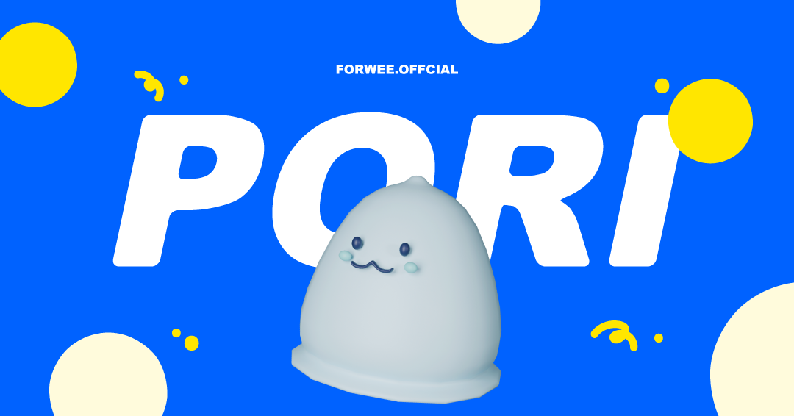

RixFont x 이누아리두리네
인스타툰 <너무 귀여워서 푸들푸들>을 통해 귀여운 반려견과의 일상을 그리는
이누아리두리네와 콜라보로 기획, 제작한 서체입니다.
세상 모든 강아지를 사랑하는 사람들을 위해 폰트 무료 배포를 기획했습니다.
둥 글


아이들의 동글동글 눈, 코, 입, 얼굴을 쏙 빼닮은 폰트!
웃고, 울고, 화나고, 신나는 친구들의 다채로운 표정과 사랑스러움을 담았습니다.